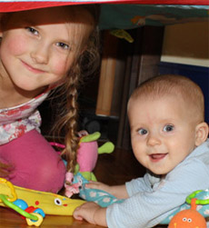
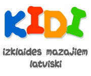

Kidi.lv ir interneta lapa pirmsskolas vecuma bērniem, kas ir nekomerciāls Ančupānu ģimenes projekts. Mēs pavisam esam četri – tētis Lauris, mamma Linda, bērni Monta un Marks.
Ideja par bērnu spēļu lapu radās 2009.gadā, kad mūsu tolaik 2 gadus vecā meitiņa sāka izrādīt interesi par datoru. Gribējām viņai parādīt kādu spēlīti internetā, bet tās lielākoties bija tikai angļu valodā. Tad izdomājām, ka spēles latviešu valodā varētu veidot paši! Tā radās mūsu pirmā spēle par alfabētu. Mājas lapa tika izveidota 2010.gada martā, un tās autori esam mēs paši – Lauris ir veidojis vizuālo un tehnisko saturu, Linda vairāk palīdzējusi ar idejām un ierunājusi spēles.
 Mājas lapā atrodamās spēles ir iedalītas 2 grupās. Vienas pieejamas pašiem mazākajiem, kuri vēl tikai iepazīstas ar datora peli un klaviatūru. Otra spēļu grupa ir piemērotāka vecākiem bērniem, kuri jau ir apguvuši pamatiemaņas datora lietošanā. Patiesībā kidi.lv lietotājs var būt arī vecāks bērns, kas mācās skolā, jo grūti noteikt konkrētu vecumu, kurā mūsu lapa kļūst neinteresanta. Kidi.lv laiku pa laikam tiek papildināts ar kādu jaunu spēli, jo ideju mums ir daudz. Līdz šim jaunumi parādās vien pāris reizes gadā, jo katras spēles radīšana ir ļoti laikietilpīga, tāpēc, lūdzu, esiet pacietīgi.
Liels paldies mūsu radiem un draugiem par atbalstu un ieteikumiem! Lapas pastāvēšanas laikā esam saņēmuši milzum daudz pozitīvu atsauksmju ne tikai no tuviem, bet arī no pavisam nepazīstamiem cilvēkiem.
Par mums un kidi.lv lapu vairāk varēs pastāstīt arī dažas publikācijas:
Raksts laikrakstā "Dienas Bizness"
Dalībnieka apraksts EU kampaņā par drošu internetu POSCON
Mēs ļoti ceram, ka bērniem patiks kidi.lv, un ka šī lapa palīdzēs apgūt daudz jaunu un interesantu lietu!
Linda Ančupāne
P.S. Cien. vecāki, lūdzu, ņemiet vērā, ka bērnam nav ieteicams atrasties pie datora ilgāk kā 30 min. dienā.
Ja vēlaties ievietot attēlu ar saiti uz KiDi.lv savā mājas lapā, iekopējiet zemāk redzamo kodu savas mājas lapas saturā:
